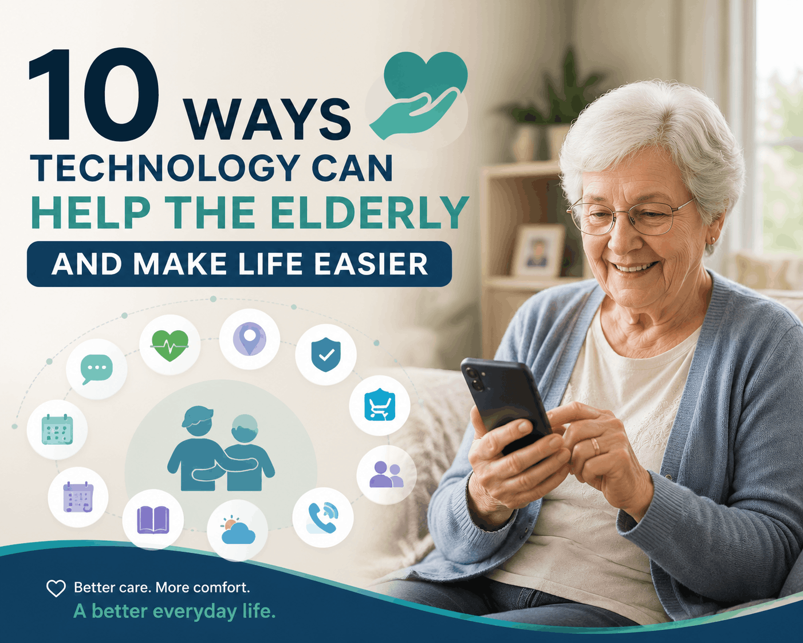

As technology becomes a bigger part of everyday life, many mobile apps are helping seniors stay connected, healthy, safe, and independent. Bringing medications, staying in touch with family, or seeking help in case of an emergency, the appropriate apps can simplify everyday life to a great extent.
These online tools can enhance the quality of life of seniors and give family members and caregivers peace of mind.
The following are 10 of the best apps that can assist the elderly to live more comfortably and confidently.
Some of the issues that many older adults struggle with include health conditions, recalling appointments, socialization, and independence. Mobile applications provide convenient solutions that can make these activities easier and promote healthy ageing.
Technology has become more accessible than ever with user-friendly interfaces and helpful features that many apps are specially created to address the needs of seniors.
It is important to take medications at the right time in order to stay healthy. Medisafe is a prescription management application that assists the elderly in monitoring their prescriptions and getting notifications when they need to take medication.
Key features include:
This app will be particularly helpful with elderly individuals who take various medications.
Zoom allows seniors to have video calls with their family and friends regardless of their location.
Benefits include:
Zoom can be used to alleviate isolation among seniors who are alone or distant.
This app turns a smartphone into a digital magnifier, making it easier to read labels, menus, medication bottles, and documents.
Features include:
It can serve as an effective daily aid to seniors who have vision problems.
Many older adults and their families are concerned with safety. Life360 is a location-sharing application that enables family members to know where each other is.
Key advantages include:
Both caregivers and seniors can be reassured by this app.
MyFitnessPal is an application that assists users to monitor nutrition, physical activity, and wellness.
Benefits include:
This app can be of great use to seniors who want to enhance their eating and physical activity.
It is safer and more comfortable to navigate with Google Maps. The application will offer navigation support when seniors are on the road, walking, or riding the bus.
Useful features include:
This application can assist the elderly to be independent during their journeys within their communities.
One of the most common hobbies of older adults is reading, which can be challenging due to vision issues. Audible provides the ability to listen to thousands of audiobooks at any place.
Why seniors love it:
It's an excellent way to stay entertained and mentally engaged.
Mental health and relaxation are important aspects of healthy ageing. Calm offers guided meditation, breathing exercises, and sleep aid.
Features include:
Calm may be a wellness ally to seniors who feel anxious, stressed, or have trouble sleeping.
Some seniors might have difficulties with transportation, particularly those who do not drive anymore. Uber is a convenient ride-booking service via a smartphone.
Advantages include:
This service can assist seniors to attend appointments, run errands, and socialize.
Emergency aid apps may prove to be a lifesaver in an emergency. Most smartphones currently have built-in Emergency SOS features, and other apps provide additional safety features.
Common features include:
These applications provide added security for independent seniors.
Not every app will be suitable for every individual.
When selecting apps for older adults, consider the following:
It is best to begin with a small number of apps and get seniors more at ease with technology before exploring other applications.
Book a free Tech Safety Check today — click here for details or just call/text and say “Tech Check”. Book Your Free Tech Safety Check Now